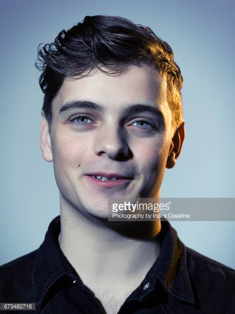
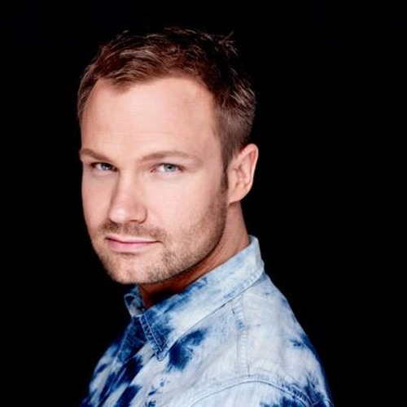

Tributo a Martin Garrix
Martijn Gerard Garritsen, nacido en Amstelveen en 1996,1 mejor conocido artísticamente como Martin Garrix, es un DJ y productor neerlandés. Su éxito comenzó con el lanzamiento de la canción "Animals", el 17 de junio de 2013 por la discográfica Spinnin' Records. La canción alcanzó el puesto #1 en Bélgica y en Reino Unido, y el puesto #3 en Irlanda. El sencillo Wizard, producido con Jay Hardway, también ha sido un éxito en numerosos países en 2014. Ingresó a la encuesta anual Top 100 DJ's realizada por la revista DJmag, directamente al puesto 40. En 2014, obtuvo el 4ª puesto, en 2015 fue nombrado 3º y en 2016 fue elegido por la revista como mejor DJ del mundo, colocándolo en el puesto número

Tributo a Dash Berlin
Jeffrey Sutorius (La Haya, 8 de noviembre de 1979), más conocido como Dash Berlin, es un músico, DJ y productor neerlandés de música house y anteriormente orientado hacia la música trance. Es también denominado como colectivo musical en el que integra junto a Eelke Kalberg y Sebastiaan Molijn (anteriormente conocidos como Pronti & Kalmani) quienes supieron trabajar como productores de Alice DeeJay, Candee Jay, Vengaboys y como colaboradores de Sander Kleinenberg.1 En su adolescencia, Dash Berlin comenzó a trabajar en una tienda de discos y se convirtió en un entregado coleccionista de vinilos con una fascinación especial por el Trance. Actualmente, ocupa la posición número 17 del top 100 djs de la revista DJmag, descendiendo dos lugares desde 2015 cuando ocupó el lugar 15. Su mejor performance ocurrió en el año 2012 cuando alcanzó la séptima posición.